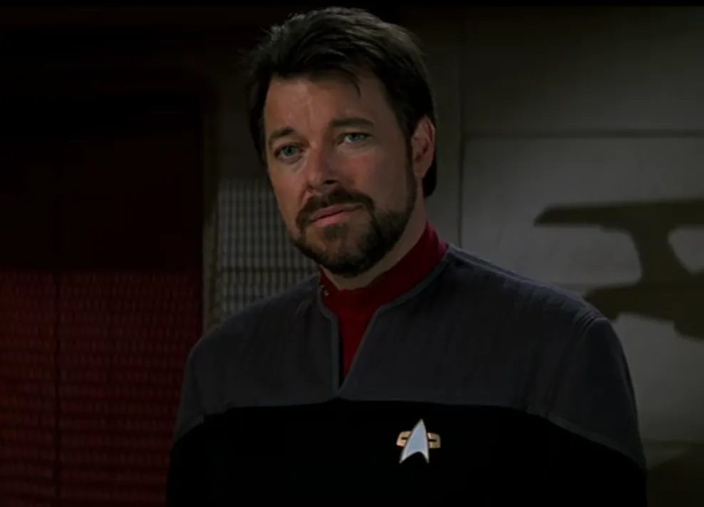
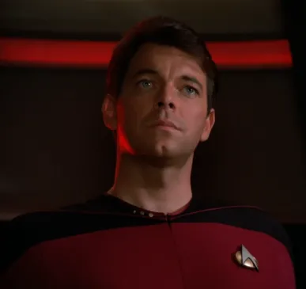
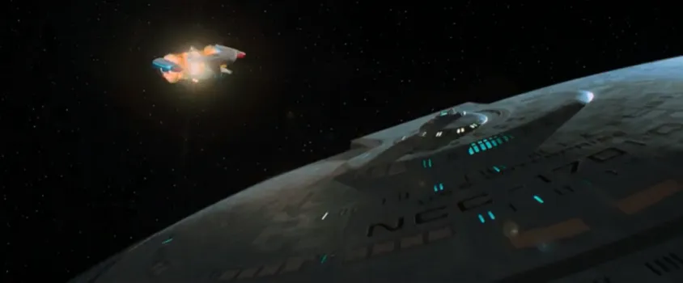
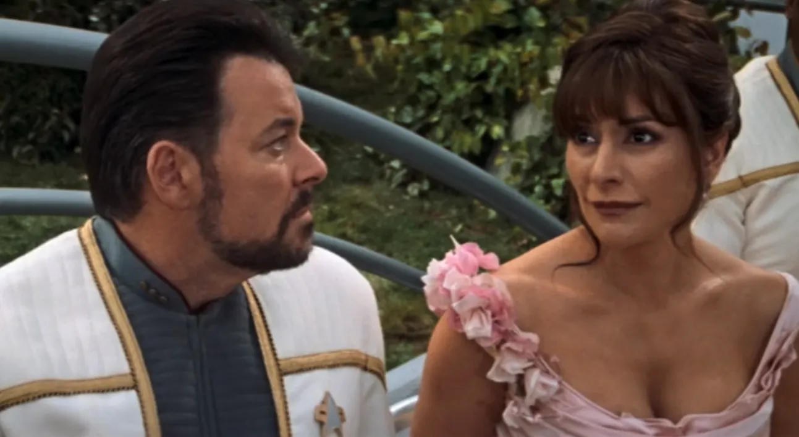
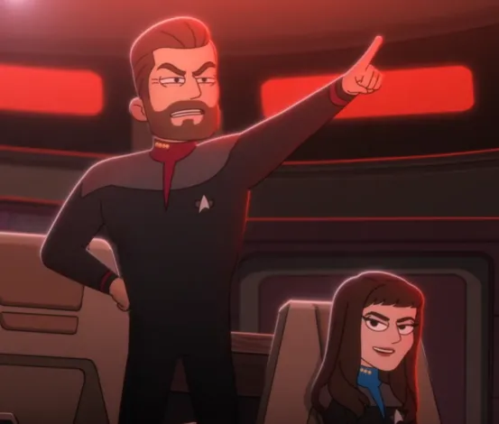
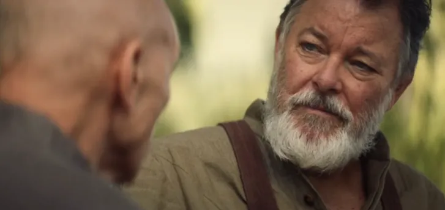

@c6reviews.
@c6reviews.| William Thomas Riker | |
|---|---|
 |
|
| Played by: | Jonathan Frakes |
| Primary Series: |  Seasons 1-7  Seasons 1 & 3 |
| Primary Films: |
Star Trek Generations Star Trek: First Contact Star Trek: Insurrection Star Trek Nemesis |
| Also appears in: |
DS9 3x09: Defiant Spoiler » (transporter duplicate)
VOY 2x18: Death WishENT 4x22: These Are The Voyages... LOW 1x10: No Small Parts LOW 2x01: Strange Energies LOW 2x02: Kayshon, His Eyes Open |
Early Life
William Thomas Riker born
William was born August 19th, 2335 to Kyle and Betty Riker in Alaska.View on comprehensive timeline ❱
2337
Will's mother dies
When Will was only two years old, his mother Betty passed away, leaving Will to be raised by his father, alone. Will's relationship with his father was constantly strained.
Will's relationship with his father continues to sour
While on a fishing trip together, Kyle insisted on reeling in a large fish that Will had hooked. Representative of Will's declining relationship with his father, this incident bothered Will for many years.
Riker age 10
Will is abandoned by his father
Will had been completely abandoned by his father by the age of fifteen, requiring him to take care of himself and learn skills such as cooking.
Riker joins Starfleet Academy
Riker age 20
Riker graduates from Starfleet Academy
Riker ranked eighth in his class.
Riker is assigned to the USS Pegasus
Ensign Riker is assigned as the conn officer on the USS Pegasus under Captain Erik Pressman.
Riker sides with Pressman during a mutiny on the Pegasus
Still inexperienced and fresh from the academy, Riker joins Pressman in anti-mutiny efforts during controversial experiments on board the Pegasus.
2358-2361
Riker stationed on Betazed
During his time on Betazed, Riker meets Deanna Troi and begins their romantic relationship.
TNG 6x24: Second Chances Spoiler »
Riker is duplicated in a transporter accident
While serving on the USS Potemkin, Lieutenant Riker was unknowingly duplicated in a transporter event when beaming back from a mission on Nervala IV. His duplicate remained on the planet while he was beamed safely back to the ship. Since they were unaware of the duplicate, he was left behind on the planet.
Riker is duplicated in a transporter accident
Riker age 28
Service on the USS Enterprise‑D

Riker promoted to Commander and First Officer of the Enterprise
Commander William Riker is picked up by the Enterprise NCC‑1701‑D at Farpoint Station to begin his service as this ship's first officer.TNG 1x01: Encounter at Farpoint

Riker serves as first officer on a Klingon ship
As part of an officer exchange program, Riker volunteers to serve on the IKS Pagh.TNG 2x08: A Matter of Honor
Riker accused of murder
After an unexplained explosion at a Krieger wave research facility, Riker is charged with the murder of a prominent scientist, Dr. Nel Apgar. He is later acquitted of all charges after a team from the Enterprise determines the true cause of the explosion.TNG 3x14: A Matter of Perspective
Riker is severely injured while undercover
During a reconnaissance mission observing the Malcorians and disguised to appear as one of them, Riker is taken to a hospital after being injured. There, it's discovered that he is an alien, and the Enterprise must swoop in to find Riker and contain the damage to this pre-warp society.TNG 4x15: First Contact

Riker falls in love with a member of an androgynous race
Riker falls for Soren, a member of the androgynous J'naii race who dares to be female. Their forbidden love leads to drastic consequences.TNG 5x17: The Outcast
Riker thinks he's going insane when the world keeps shattering around him
Riker's landscape keeps shifting between rehearsing a play on the Enterprise and an alien hospital where he's being treated for hallucinations and delusions. He begins to lose touch with reality when he can't distinguish which is real and which is the dream.TNG 6x21: Frame of Mind
Riker comes face-to-face with his former captain
Now-Admiral Pressman, Riker's former Captain, comes on board the Enterprise to rehash an event from years prior that Riker wanted to forget. Together, they search out their abandoned ship, the Pegasus, which is carrying a highly classified and controversial technology.TNG 7x12: The Pegasus


Spoiler » Destruction of the Enterprise
The Enterprise embarks on a mission to stop Tolian Soran from destroying a star. A conflict with the Duras sisters during these events would lead to the destruction of the Enterprise‑D.

When the Borg go back in time to alter the events of Earth's First Contact, Riker finds himself assisting in piloting humanity's first warp-capable vessel.
Riker age 39

Mission to the Briar Patch
Riker and the Enterprise embark on a mission to investigate what is happening among the Son'a and Ba'ku in the region of space known as the Briar Patch.


Riker marries Deanna Troi and does battle with the Scimitar
Shortly after his wedding, Riker joins the Enterprise‑E on a mission to Romulus to investigate a major change of political power, where they are confronted by a warship called the Scimitar, under the command of Shinzon.
Riker promoted to captain and given command of the USS Titan
Following the events at Romulus, Riker is promoted and becomes the commanding officer of the USS Titan.

Riker and the Titan rescue the Cerritos from the Pakleds
After the incident, he offered Ensign Brad Boimler a promotion to lieutenant j.g. and a position aboard the Titan.LOW 1x10: No Small Parts
Riker and Troi welcome their first child
Thaddeus Troi-Riker was born on the Titan.
2382–2397
(16 years)
(16 years)
Riker age 63

Riker provides refuge for Picard at his cabin home on Nepenthe
Riker prepares backyard wood-fired pizza and sage advice for Picard and Soji while they lie low after being chased by the Romulan secret police.PIC 1x07: Nepenthe

Star Trek: Picard Season 3 Spoiler »
Riker joins Picard and the rest of the Enterprise gang on one more adventure
Riker, along with Picard, comes to the aid of Beverly Crusher, who is being chased by an unknown foe. Together with all their old friends, they investigate and uncover a deep conspiracy threatening the Federation.Riker joins Picard and the rest of the Enterprise gang on one more adventure
Star Trek: Picard Season 3